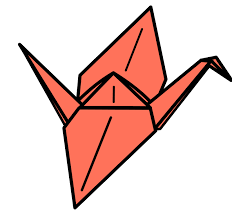

Cranes are powerful flyers, with some having the ability to fly over the Himalayas.
During migration cranes fly with their head and neck straight out and their feet and legs straight behind them.
Cranes form lifelong monogamous pair bonds.
Cranes face many threats, including excessive hunting and habitat destruction.
Sandhill crane populations have been reduced by hunting and by the draining of marshes, which they seek for nesting.
The whooping crane (Grus americana) is the tallest American bird, with adults standing to 1.5 m (5 ft.) tall. Whooping cranes also have wingspans up to 2.1 m (7 ft.).